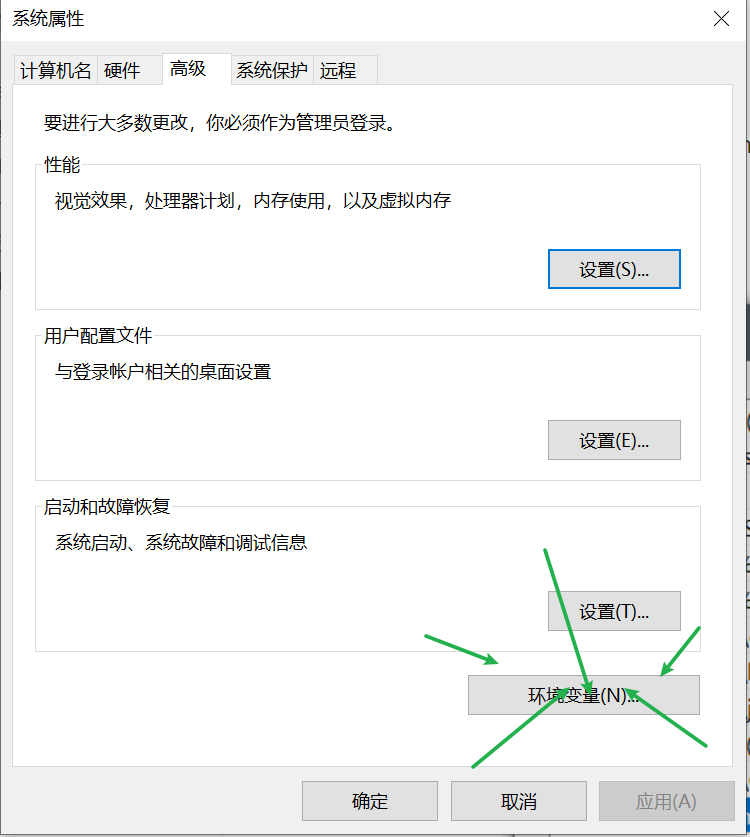
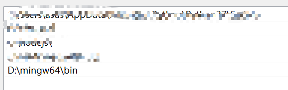
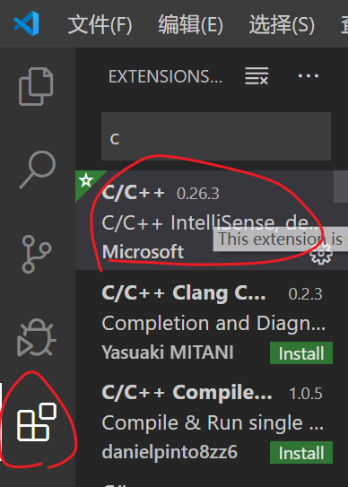
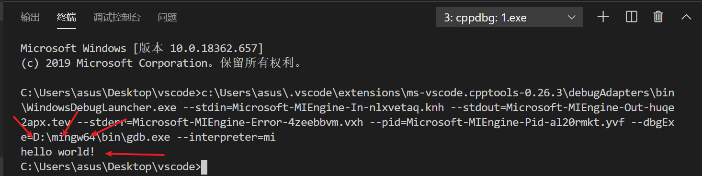

vscode配置c
前言
通过网上dl的教程我成功配置好c啦! 链接在这里https://hovenjay.github.io/2018/06/01/VSCodeC/
不过配置的过程还是很艰辛的,也有一些弯路,所以记录一下
工具
Visual Studio Code:https://code.visualstudio.com/
MinGw-w64:https://sourceforge.net/projects/mingw-w64/
1. MinGW
介绍
MinGW 是一组包含文件和端口库，其功能是允许控制台模式的程序使用微软的标准C运行时（C Runtime）库
如果已经下载了devcpp还有其他什么编译器的可以不用下,在文件夹里找一下,会有的
安装
首先下载 MinGW-w64 。下载完成之后我们开始安装 MinGw-w64，安装路径可以自由定义(自己找得到就行)
安装时需要设置的安装选项如下：
- Version ：GCC 版本，直接选最高；
- Architecture ：CPU 架构，系统如果为64位，则选择 x86_64；
- Threads ：API 模式，使用默认选项；
- Exception ：异常处理方式，seh 仅针对 64 位架构，sjlj 则兼容 32 位架构；
- Build revision ：修订版本，使用默认选项；

加入环境
在安装路径中找到 bin 文件夹，通常在 ${MinGW-w64安装位置}\mingw64\bin
接下来，我们将刚刚获取的 bin 文件夹的路径添加到系统环境变量。
win10的话,点击设置
搜索环境

编辑系统环境path

加入 bin 文件夹的路径

检测环境变量是否配置正确
在命令行输入 gcc –version，如果返回的是已安装的 gcc 的版本信息，那么环境变量就配置正确了。
2. vscode插件
- c/c++
- code runner
- chinese
><这个选下吼,不得不说太和我的心意了
在下图所示位置搜索下载

3. 创建和设置c语言工作开发区
在你的计算机中选择一个合适的位置，作为你的 C 语言开发工作区。建议工作区所在路径仅由字母、数字、下划线组成，不要包含其他的符号。
使用vscode打开你创建的工作区
在工作区新建一个 C 语言源文件命名为 hello.c ，输入以下内容：
1 |
|
4. 配置导入的头文件参数 c_cpp_properties.json
在编写完毕并保存之后，你可能会看到 #include 这句下面会有绿色波浪线，这是由于编译器没办法找到你所使用的头文件的所在位置。将光标移动到该行，行号左边会出现 黄色小灯泡 ，点击会出现一个提示按钮：Add include path to setting ，继续点击该提示，则会在工作区 .vscode 下生成 c_cpp_properties.json 文件。将文件修改成下面内容：
1 | { |
5. 配置调试程序 launch.json
打开已经编写好的 hello.c ，然后按 F5 调试。因为是第一次调试，系统会弹出 选择环境 面板，这里选择 C++(GDB/LLDB) 。

选择运行环境后，VS Code 会在工作区 .vscode 文件夹下创建 luanch.json 模板文件并打开，将文件内容清空，复制下面的内容到文件中并保存：
1 | { |
留意 luanch.json 中注释内容，记得把 “miDebuggerPath” 参数修改成你自己安装位置里的 gdb.exe
gdb.exe 位于 {MinGW-w64安装位置}\mingw64\bin 下面。
==注意!!!==
"externalConsole": false, // 设置是否显示外部控制台。
这段配置,我在网上搜索的时候,无一例外都是改成true的
true—->像是在dev啊,vs啊之类的,会弹出一个黑色的框,用来互交,输出
false—->在终端中显示出来
本来我也是改成true的,但是弹框总是会闪退,查了很久所有解决办法都试过了,但是没法解决,能力有限
所以就改成false了,意外的好用.互交,输出都在终端中进行,如下图

6. 配置调试前执行的任务 task.json
再按一次 F5 ，会弹出“找不到任务”的提示窗口，点击 配置任务 按钮，如下图所示：

然后在弹出的命令面板选择 使用模板创建 task.json 文件 ，如下图所示：

继续选择 Others 运行任意外部命令的示例 ，如下图所示：

完成以上步骤之后，会在工作区的 .vscode 目录下生成 tasks.json 文件，并自动打开 task.json 文件。

接下来我们将 task.json 文件内容清空，复制下面的内容到文件中并保存：
1 | { |
7. ojbk
回到hello.c,重新按下F5,yeah!!!